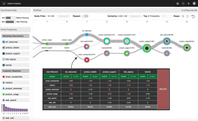
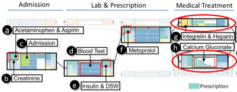
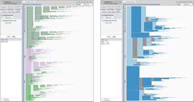
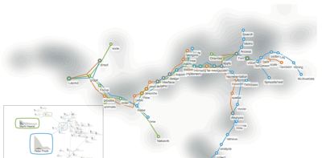

Conference Full Papers (8)
 Real-Time Clustering for Large Sparse Online Visitor Data
Real-Time Clustering for Large Sparse Online Visitor Data
WWW Proceedings of The Web Conference, 2020.
Download: [pdf]

Visualizing Uncertainty and Alternatives in Event Sequence Predictions
CHI Proceedings of the SIGCHI Conference on Human Factors in Computing Systems, 2019.
Download: [pdf]
DeepCompare: Visual and Interactive Comparison of Deep Learning Model Performance
VDS Symposium on Visualization in Data Science, 2018.
Download: [pdf]
 Finding Similar People to Guide Life Choices: Challenge, Design, and Evaluation
Finding Similar People to Guide Life Choices: Challenge, Design, and Evaluation
CHI Proceedings of the SIGCHI Conference on Human Factors in Computing Systems, 2017.
Download: [pdf] [software] [video] | Best Paper Honorable Mention
 iSphere: Focus+Context Sphere Visualization for Interactive Large Graph Exploration
iSphere: Focus+Context Sphere Visualization for Interactive Large Graph Exploration
CHI Proceedings of the SIGCHI Conference on Human Factors in Computing Systems, 2017.
Download: [pdf] [demo] [quad-tree]
EventAction: Visual Analytics for Temporal Event Sequence Recommendation
VAST Proceedings of the IEEE Visual Analytics Science and Technology, 2016.
Download: [pdf] [software] [video] | Featured in News
 Trajectory Bundling for Animated Transitions
Trajectory Bundling for Animated Transitions
CHI Proceedings of the SIGCHI Conference on Human Factors in Computing Systems, 2015.
Download: [pdf] [video]
Cohort Comparison of Event Sequences
with Balanced Integration of Visual Analytics and Statistics
IUI Proceedings of the 20th International Conference on Intelligent User Interfaces, 2015.
Download: [pdf] [software] [video]
Journal Articles (10)
EventAction: A Visual Analytics Approach to Explainable
Recommendation for Event Sequences
TiiS ACM Transactions on Interactive Intelligent Systems, 2019.
Download: [pdf] | TiiS Best Paper Award

Visual Progression Analysis of Event Sequence Data
TVCG IEEE Transactions on Visualization and Computer Graphics, 2019.
Download: [pdf]
Visual Interfaces for Recommendation Systems:
Finding Similar and Dissimilar Peers
TIST ACM Transactions on Intelligent Systems and Technology, 2018.
Download: [pdf]
RCLens: Interactive Rare Category Exploration and Identification
TVCG IEEE Transactions on Visualization and Computer Graphics, 2018.
Download: [pdf]

Coping with Volume and Variety in Temporal Event Sequences:
Strategies for Sharpening Analytic Focus
TVCG IEEE Transactions on Visualization and Computer Graphics, 2017.
Download: [pdf] [software]
Giardiasis Diagnosis and Treatment Practices
Among Commercially Insured Persons in the United States
CID Clinical Infectious Diseases, 2017.
Download: [eprint] | Joint work with
Z-Glyph: Visualizing Outliers in Multivariate Data
IV Information Visualization, 2017.
Download: [pdf]
 High-Volume Hypothesis Testing:
High-Volume Hypothesis Testing:
Systematic Exploration of Event Sequence Comparisons
TiiS ACM Transactions on Interactive Intelligent Systems, 2016.
Download: [pdf]
 Episogram: Visual Summarization of Egocentric Social Interactions
Episogram: Visual Summarization of Egocentric Social Interactions
CGA IEEE Computer Graphics and Applications, 2016.
Download: [pdf] [video] | Feature Article

Visual Analysis of Set Relations in a Graph
CGF Computer Graphics Forum (Proc. EuroVis), 2013.
Download: [pdf]
Conference Short Papers (9)
 Interactive Event Sequence Prediction for Marketing Analysts
Interactive Event Sequence Prediction for Marketing Analysts
CHI CHI Extended Abstracts on Human Factors in Computing Systems, 2020.
Download: [pdf]
A Formative Study on Designing Accurate and Natural Figure Captioning Systems
CHI CHI Extended Abstracts on Human Factors in Computing Systems, 2020.
Download: [pdf]
Personalizable and Interactive Sequence Recommender System
CHI CHI Extended Abstracts on Human Factors in Computing Systems, 2018.
Download: [pdf]
Interactive Campaign Planning for Marketing Analysts
CHI CHI Extended Abstracts on Human Factors in Computing Systems, 2018.
Download: [pdf]
Simplifying Overviews of Temporal Event Sequences
CHI CHI Extended Abstracts on Human Factors in Computing Systems, 2016.
Download: [pdf] | Best Paper Honorable Mention
Visualizing Clinical Event Sequences to Support EHR Data Retrieval
AMIA AMIA Annual Symposium, 2016.
Download: [pdf]
What Did Others Like Me Do to Reach Their Health Goals?
EventAction for Event Sequence Recommendations
VVH Workshop on Valuable Visualization of Healthcare Information, AVI, 2016.
Download: [pdf]
EventFlow: Interactive Event Sequence Visualization and Querying
VAHC Workshop on Visual Analytics in Healthcare (in conjunction with AMIA), 2014.
Download: [pdf]
An Evaluation of Visual Analytics Approaches to Comparing Cohorts of Event Sequences
EHRVis Workshop on Visualizing Electronic Health Record Data, IEEE VIS, 2014.
Download: [pdf]